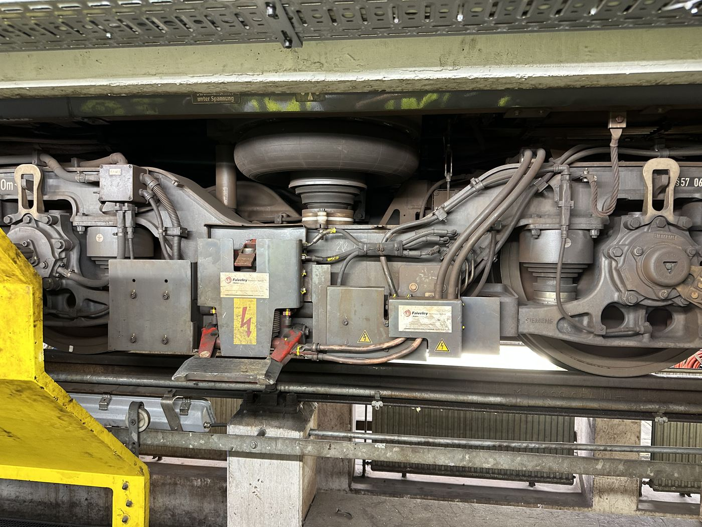

Anbindung des Drehgestells an den Wagenkasten über die Luftfeder (schwarzer Balg, oben).
Bauteil auf der Seite „Drehgestell“
Anbindung des Drehgestells an den Wagenkasten über die Luftfeder. Sie überträgt die Gewichtskraft senkrecht zur Erdbeschleunigung sowie den Kraftfluss in Fahrtrichtung vom Drehgestell auf den Wagen.
Damit sich das Drehgestell beim Durchfahren von Kurven relativ zum Wagenkasten verdrehen kann, ist die Verbindung als Gelenk mit begrenzten Freiheitsgraden ausgeführt statt starr verschraubt. Kräfte und Momente werden dabei getrennt über mehrere Bauteile geführt: die Luftfeder überträgt vor allem die Gewichtskraft, zusätzliche Lenker/Anlenkpunkte übertragen den Kraftfluss in Fahrtrichtung.
Diese Trennung der Lastpfade ist ein klassisches Thema der technischen Mechanik: Ein Freikörperbild des Drehgestells zeigt, wie sich die resultierende Kraft aus Gewichtskraft, Fahrtrichtungskraft und Kurvenkräften auf die einzelnen Lagerstellen aufteilt.